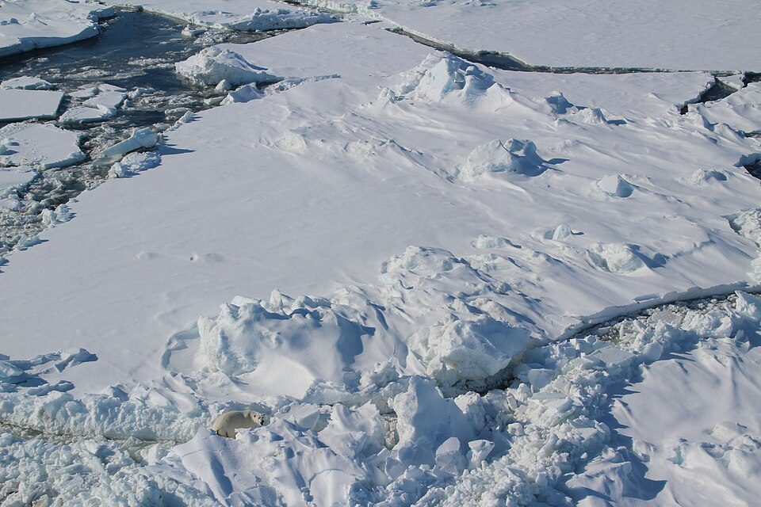
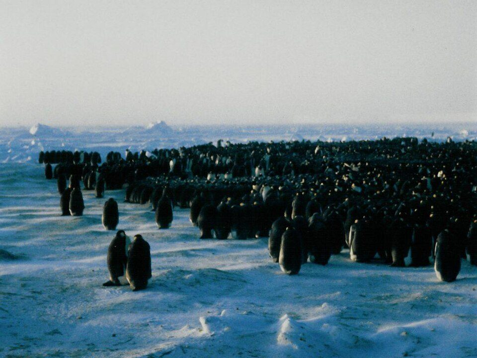

Biomes: from savanna to ice
Savannas, grasslands, tundra and poles: the planet's great ecosystems and the animals that have learned to live at the extremes.


A biome is a large region of the planet with a characteristic climate, vegetation and animals. There are land biomes, such as savanna or tundra, and aquatic ones, such as reefs. In each, living things form ecosystems: webs of relationships in which some eat others, compete, cooperate and recycle matter.
How an ecosystem works
- Producers, plants and algae, capture the Sun's energy.
- Consumers eat them: herbivores first, then carnivores.
- Decomposers, bacteria and fungi, return everyone's remains to the soil.
At each step of the chain about 90% of the energy is lost. That is why there are many more gazelles than lions, and much more grass than gazelles.
Savannas
Tropical grasslands with scattered trees and a very marked dry season. In the Serengeti and Masai Mara, between Tanzania and Kenya, each year around 1.5 million wildebeest, along with zebras and gazelles, travel a circuit of hundreds of kilometres following the rains and fresh grazing. It is the largest migration of land mammals on the planet, pursued by lions, hyenas and crocodiles.
Grasslands and steppes
The great temperate grassy plains: the Argentine pampas, the North American prairies, where tens of millions of bison once roamed, and the Eurasian steppe. Their deep black soils are among the most fertile in the world, which is why almost all have been turned into cereal fields.
The tundra
Beyond the tree line, in northern Canada, Alaska, Scandinavia and Siberia, summer is so short and cold that only mosses, lichens, grasses and dwarf shrubs grow. Below, the ground is frozen all year round: this is permafrost. As it thaws with warming, it releases methane and carbon dioxide trapped for thousands of years, and it has exposed almost intact woolly mammoths.
Life at the poles

.jpg){kind=link}
- The polar bear has black skin to absorb heat and hollow, transparent hairs that look white. It depends on sea ice to hunt seals, and its future is tied to that of the Arctic ice.
- The emperor penguin breeds in the depths of the Antarctic winter, at −40 °C. The male incubates the egg on his feet for about two months without eating, huddled with thousands of others who take turns in the warm centre.
- Some Antarctic fish have antifreeze proteins in their blood that stop ice crystals forming.


Spain's ecosystems
Spain brings together an exceptional variety: Atlantic forests in the north, dehesas and Mediterranean scrub, cereal steppes with great bustards, wetlands such as Doñana, one of Europe's most important for birds, high mountains in the Pyrenees and Sierra Nevada, and the volcanic ecosystems of the Canary Islands. The peninsula also hosts millions of wintering birds from northern Europe.